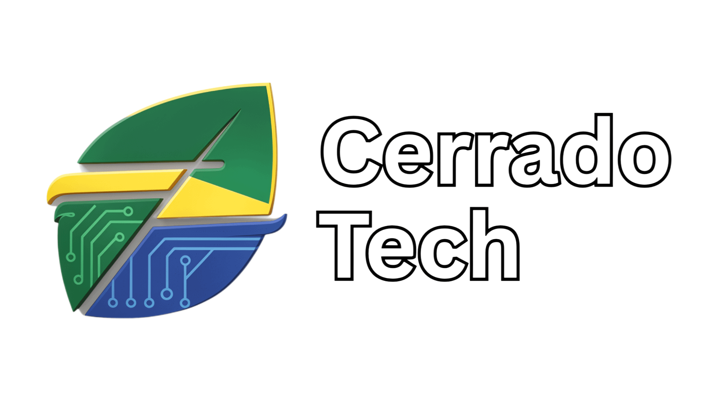

Software feito em torno do seu negócio.
A fábrica de software da Cerrado Finanças & Tech: ERPs, CRMs, IA e dashboards para empresas e para a gestão pública.
 Cerrado Tech
Arraste
Cerrado Tech
Arraste

A fábrica de software da Cerrado Finanças & Tech: ERPs, CRMs, IA e dashboards para empresas e para a gestão pública.
Cerrado Tech
Arraste
Cada função nasce de uma necessidade real
Mercado privado e gestão pública
Sem amarras de fornecedor
SAP®, TOTVS, Power BI, bancos e NF
Cerrado Tech
Financeiro, estoque e fiscal
Funil e follow-ups
Os dados ficam em casa
Integrados ao ERP
LGPD e auditoria
DRE e KPIs no celular
Cerrado Tech
IA 100% local que responde com a fonte de cada informação
GovDash, Edu, GovRH e Docs para a gestão pública
Cursos práticos de IA com quem constrói software
Produtos próprios que viram startups
Cerrado Tech

CEO e arquiteto de soluções
Cerrado Tech
Conte o seu processo e desenhamos a solução com você.
Cerrado Tech